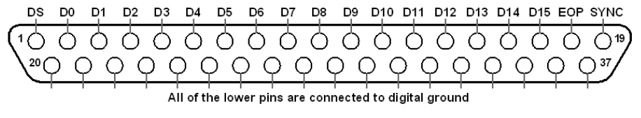

The general strategy of synchronizing data stored in HDF tables with neural data is to send synchronization data from the linux machine to the neural recording system via a hardware digital output device.
Plexon Mode 2 (strobed word) digital input supports 15 bit messages. This is the communication protocol that will be used:
| 14 | 13 | 12 | 11 | 10 | 9 | 8 | 7 | 6 | 5 | 4 | 3 | 2 | 1 | 0 |
| data |
| msg_type |
| aux |
data -> 8 bit data word
msg_type -> { 0: data packet, 1: message, 2: register, 3: register shape, 4: row, 5: rowbyte }
System registration
When a new system is registered, the string name of the system is sent character by character, with each character associated with their sub- sequent 4-bit code, all terminated with null. For example, a motion system gets registered, 7 packets are sent:
0000 010 bin(ord('m'))
0000 010 bin(ord('o'))
0000 010 bin(ord('t'))
0000 010 bin(ord('i'))
0000 010 bin(ord('o'))
0000 010 bin(ord('n'))
0000 010 \x00
If now an “eye” system gets registered, 4 more packets are sent:
0001 010 bin(ord('e'))
0001 010 bin(ord('y'))
0001 010 bin(ord('e'))
0001 010 \x00
After the system name is registered, the shape definition is sent. The data shape will be encoded as a sequence of unsigned short (np.uint16) values. For example, if the shape will be (8, 3) for motion:
0000 011 0
0000 011 3
0000 011 0
0000 011 8
Messages
Messages from the system are sent character by character, with a null terminator. If ‘test’ is sent as the message, 5 packets:
0000 001 bin(ord('t'))
0000 001 bin(ord('e'))
0000 001 bin(ord('s'))
0000 001 bin(ord('t'))
0000 001 \x00
Data packets
All data will be sent as double (np.float). Sending an eye data at (.1, .2) looks like this:
0001 000 63 0001 000 201 0001 000 153 0001 000 153
0001 000 153 0001 000 153 0001 000 153 0001 000 154
0001 000 63 0001 000 185 0001 000 153 0001 000 153
0001 000 153 0001 000 153 0001 000 153 0001 000 154
This communication scheme has been implemented in two software-controlled hardware devices, a NI PCI 6503 card and an Arduino MEGA. To run the
Note
The NIDAQ card is functionally deprecated because the Arduino solution is cheaper and works with any linux kernel version.
Software control of this card uses the comedi open-source library (used for controlling NI devices from linux). We have been unable to make it work in certain newer kernel versions. The last known working kernel version with the comedi library was ‘3.2.0-60’. See the installation instructions for directions on how to change the ubuntu kernel version. The low-level software controller is implemented in riglib.nidaq.SendRowByte. In actual use for the task, a feature is also required (see below).
Plexon To use the NIDAQ card, use the feature features.plexon_features.RelayPlexByte
| DIO function | DIO pin | DIO color | NIDAQ pin | NIDAQ pin | DIO color | DIO pin | DIO function |
|---|---|---|---|---|---|---|---|
| – | – | empty | 1 | 2 | – | – | – |
| – | – | empty | 3 | 4 | – | – | – |
| unused | 17 | white/violet | 5 | 6 | – | – | – |
| RSTART | 24 | white/black/green | 7 | 8 | – | – | – |
| – | – | empty | 9 | 10 | – | – | – |
| – | – | empty | 11 | 12 | – | – | – |
| Strobe | 22 | white/black/orange | 13 | 14 | – | – | – |
| – | – | empty | 15 | 16 | – | – | – |
| Data Bit 15 | 16 | white/blue | 17 | 18 | – | – | – |
| Data Bit 14 | 15 | white/green | 19 | 20 | – | – | – |
| Data Bit 13 | 14 | white/yellow | 21 | 22 | – | – | – |
| Data Bit 12 | 13 | white/orange | 23 | 24 | – | – | – |
| Data Bit 11 | 12 | white/red | 25 | 26 | – | – | – |
| Data Bit 10 | 11 | white/brown | 27 | 28 | – | – | – |
| Data Bit 9 | 10 | black | 29 | 30 | white/black/violet | 26 | unused |
| Data Bit 8 | 9 | white | 31 | 32 | white/gray | 18 | unused |
| Data Bit 7 | 8 | gray | 33 | 34 | white/black | 19 | GND |
| Data Bit 6 | 7 | violet | 35 | 36 | white/black/blue | 25 | GND |
| Data Bit 5 | 6 | blue | 37 | 38 | white/black/yellow | 23 | GND |
| Data Bit 4 | 5 | green | 39 | 40 | white/black/red | 21 | GND |
| Data Bit 3 | 4 | yellow | 41 | 42 | – | – | – |
| Data Bit 2 | 3 | orange | 43 | 44 | – | – | – |
| Data Bit 1 | 2 | red | 45 | 46 | – | – | – |
| Data Bit 0 | 1 | brown | 47 | 48 | – | – | – |
| – | – | +5V from NIDAQ board | 49 | 50 | – | – | – |
Blackrock To use the NIDAQ card, use the feature features.blackrock_features.RelayBlackrockByte
| NSP digital input pin | DB37 pin | wire color | NI 6503 connector block pin | NI 6503 card | pin # (from comedi’s pt of view) |
|---|---|---|---|---|---|
| DS (digital strobe) | 1 | white | 15 | PC0 | 17 |
| D0 | 2 | grey | 47 | PA0 | 1 |
| D1 | 3 | purple | 45 | PA1 | 2 |
| D2 | 4 | blue | 43 | PA2 | 3 |
| D3 | 5 | green | 41 | PA3 | 4 |
| D4 | 6 | yellow | 39 | PA4 | 5 |
| D5 | 7 | orange | 37 | PA5 | 6 |
| D6 | 8 | red | 35 | PA6 | 7 |
| D7 | 9 | brown | 33 | PA7 | 8 |
| D8 | 10 | black | 31 | PB0 | 9 |
| D9 | 11 | white | 29 | PB1 | 10 |
| D10 | 12 | grey | 27 | PB2 | 11 |
| D11 | 13 | purple | 25 | PB3 | 12 |
| D12 | 14 | blue | 23 | PB4 | 13 |
| D13 | 15 | green | 21 | PB5 | 14 |
| D14 | 16 | yellow | 19 | PB6 | 15 |
| D15 | 17 | orange | 17 | PB7 | 16 |
| digital ground | GND | black | 50 |
The low-level PC software controller is implemented in riglib.serial_dio.SendRowByte.
Plexon
To use the arduino sync device, include the feature class features.arduino_features.PlexonSerialDIORowByte. The Arduino code used to program the microcontroller is located in $BMI3D/riglib/dio/arduino_dio_omniplex/arduino_dio_omniplex.ino
This implementation uses a DB26 break-out board, so presumably the wire colors are the same (standardized), but the numbered exposed ports from the breakout board were used instead. At least one of the ground pins (see NI wiring table above) is grounded.
| DIO function | DIO pin | Arduino MEGA pin |
|---|---|---|
| RSTART | 24 | 49 |
| Strobe | 22 | 48 |
| Data Bit 15 | 16 | 47 |
| Data Bit 14 | 15 | 46 |
| Data Bit 13 | 14 | 45 |
| Data Bit 12 | 13 | 44 |
| Data Bit 11 | 12 | 43 |
| Data Bit 10 | 11 | 42 |
| Data Bit 9 | 10 | 41 |
| Data Bit 8 | 9 | 40 |
| Data Bit 7 | 8 | 39 |
| Data Bit 6 | 7 | 38 |
| Data Bit 5 | 6 | 37 |
| Data Bit 4 | 5 | 36 |
| Data Bit 3 | 4 | 35 |
| Data Bit 2 | 3 | 34 |
| Data Bit 1 | 2 | 33 |
| Data Bit 0 | 1 | 32 |
Blackrock
[This scheme is to be implemented and tested]
From the Cerebus/NeuroPort manual (http://www.blackrockmicro.com/blackrockmicro/userfiles/file/Cerebus%20Manual.pdf) the port pinout is as follows:
| NSP digital input pin | DB37 pin | Arduino pin |
|---|---|---|
| DS (digital strobe) | 1 | 49 |
| D0 | 2 | 32 |
| D1 | 3 | 33 |
| D2 | 4 | 34 |
| D3 | 5 | 35 |
| D4 | 6 | 36 |
| D5 | 7 | 37 |
| D6 | 8 | 38 |
| D7 | 9 | 39 |
| D8 | 10 | 40 |
| D9 | 11 | 41 |
| D10 | 12 | 42 |
| D11 | 13 | 43 |
| D12 | 14 | 44 |
| D13 | 15 | 45 |
| D14 | 16 | 46 |
| D15 | 17 | 48 |
| GND | 20 | GND |
Digital ground should be connected to Arduino’s ground.
TDT
To use the arduino sync device, include the feature class features.arduino_features.TDTSerialDIORowByte. The Arduino code used to program the microcontroller is located in $BMI3D/riglib/dio/arduino_dio_tdt/arduino_dio_tdt.ino